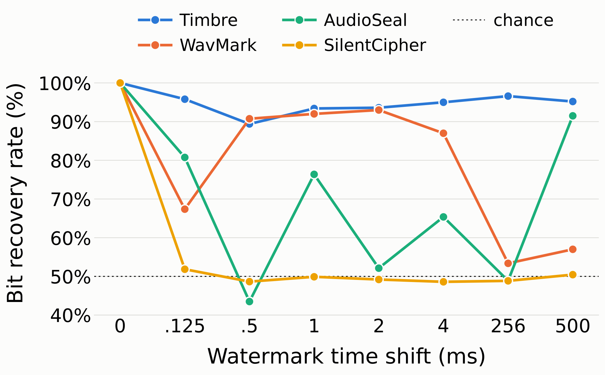
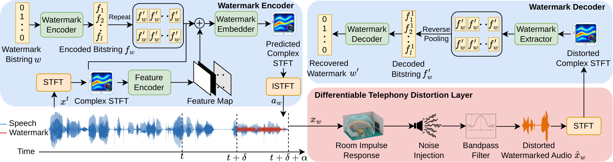
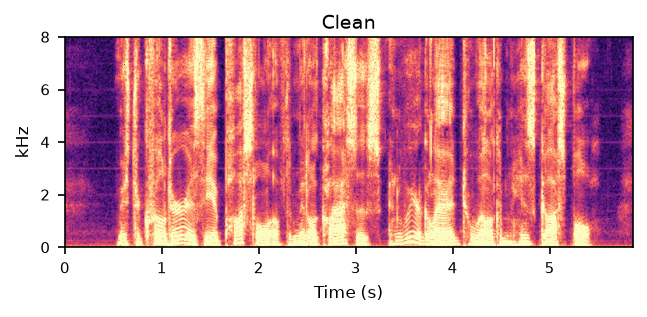
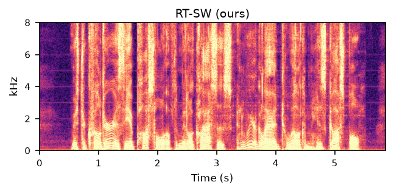
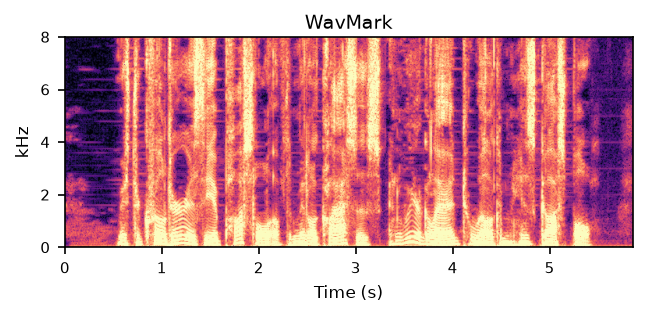
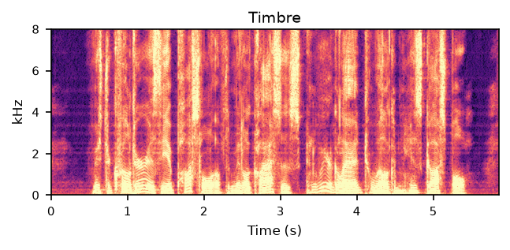
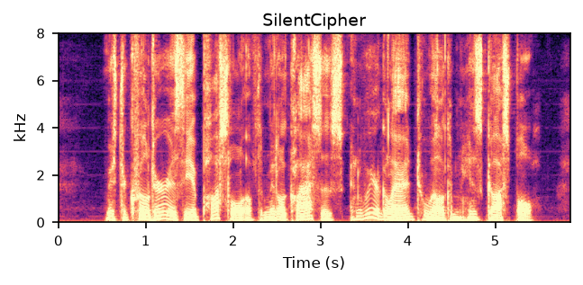
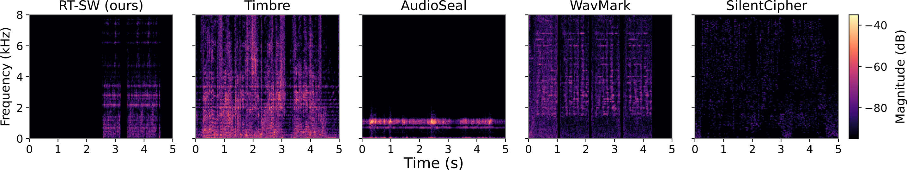

Synthetic Speech Provenance and Post-Hoc Recording Attribution
1Indiana University Bloomington, Computer Science · 2Michigan State University, CSE · 3University of Missouri–Kansas City, CS · 4Indiana University Bloomington, The Media School
RT-SW embeds a watermark into speech that has not been spoken yet. It predicts the watermark for upcoming audio from preceding context, so it runs on a live stream with 0.5 s of lookahead. Every method it is compared against reads the whole utterance offline. Under a simulated phone call, RT-SW recovers 90.6% of watermark bits (AUC 0.959) where three of four offline baselines fall to chance.
Offline watermarks assume the full clip is available before embedding. On a live stream it is not — a watermark computed from past speech must be applied to future frames.
We tested four open-source methods on 50 LibriSpeech clips: extract each watermark, shift it forward in time, add it back to the clean audio. WavMark, AudioSeal and SilentCipher degrade sharply within a few milliseconds. Only Timbre stays above 89% — and its weaker robustness to the phone channel rules it out anyway.

A predictive encoder generates the watermark for upcoming frames; a differentiable telephony channel sits between encoder and decoder during training.

The same LibriSpeech clip watermarked by each method. Switch between the watermarked audio and the watermark on its own — the residual that was added to the speech.





All clips are 16 kHz mono. SilentCipher operates at 44.1 kHz and is resampled here so the comparison is like for like; its SNR is measured at its native rate. Every method recovered its full payload from this clip except RT-SW, which recovered 9 of 10 bits.

Bit accuracy and AUC, averaged over four corpora — LibriSpeech dev-clean, LJSpeech, HiFi-GAN resynthesis and F5-TTS cross-speaker cloning. All baselines process audio offline.
| Distortion | RT-SW (ours) | AudioSeal | WavMark | Timbre | SilentCipher |
|---|---|---|---|---|---|
| No distortion | 0.976 / 0.992 | 1.000 / 1.000 | 1.000 / 1.000 | 1.000 / 1.000 | 0.999 / 0.999 |
| Median filter | 0.943 / 0.978 | 1.000 / 1.000 | 0.999 / 1.000 | 1.000 / 0.999 | 0.982 / 0.984 |
| Low-pass 4k | 0.938 / 0.974 | 1.000 / 1.000 | 1.000 / 1.000 | 1.000 / 1.000 | 0.889 / 0.899 |
| High-pass 500 | 0.968 / 0.988 | 1.000 / 1.000 | 1.000 / 1.000 | 1.000 / 1.000 | 0.965 / 0.969 |
| Compression | 0.969 / 0.990 | 1.000 / 1.000 | 1.000 / 1.000 | 1.000 / 0.999 | 0.998 / 0.998 |
| Noise suppression | 0.929 / 0.964 | 0.998 / 1.000 | 0.980 / 0.982 | 0.998 / 0.998 | 0.877 / 0.900 |
| MP3 64 kbps | 0.975 / 0.993 | 1.000 / 1.000 | 1.000 / 1.000 | 1.000 / 0.999 | 0.964 / 0.969 |
| AAC 64 kbps | 0.981 / 0.994 | 1.000 / 1.000 | 1.000 / 1.000 | 1.000 / 1.000 | 0.868 / 0.883 |
| Ogg Vorbis | 0.978 / 0.993 | 1.000 / 1.000 | 1.000 / 1.000 | 1.000 / 0.999 | 0.963 / 0.967 |
| Sample suppression | 0.978 / 0.994 | 1.000 / 1.000 | 1.000 / 1.000 | 1.000 / 0.999 | 0.893 / 0.908 |
| Telephony distortion | 0.906 / 0.959 | 0.535 / 0.582 | 0.500 / 0.500 | 0.780 / 0.908 | 0.499 / 0.498 |
Each cell is bit accuracy / AUC. Under the telephony channel WavMark and SilentCipher fail to synchronise at all, so their scores sit at chance. Timbre reaches AUC 0.908 but only 0.299 TPR at a 1% false-positive rate, against RT-SW's 0.734.
| Method | Payload | SNR (dB) | PESQ | Mode |
|---|---|---|---|---|
| RT-SW (ours) | 10 | 40.22 | 4.163 | streaming |
| AudioSeal | 16 | 27.26 | 4.426 | offline |
| WavMark | 16 | 36.61 | 4.154 | offline |
| Timbre | 10 | 27.47 | 3.697 | offline |
| SilentCipher | 40 | 49.01 | 4.590 | offline |
git clone https://github.com/yizhu-wen/Realtime_WM
cd Realtime_WM
pip install -r watermarking_model/requirements.txt
bash scripts/download_data.sh ./data # LibriSpeech + LJSpeech
bash scripts/run_evaluation.sh # reproduce the tablesThe released model is watermarking_model/checkpoints/rtsw_ep20.pth.tar.
Per-utterance scores ship with the repository, so every table can be rebuilt without re-running
the evaluation.